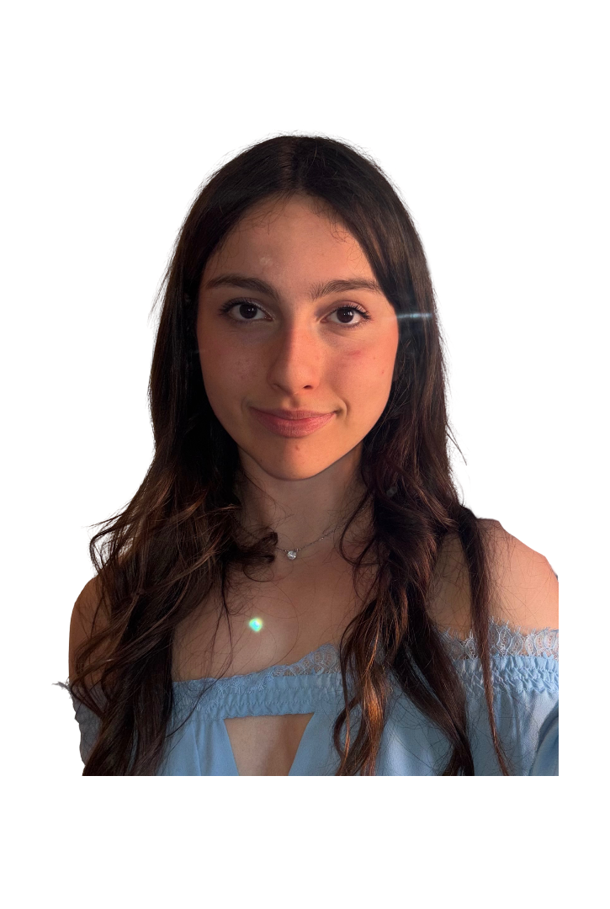

Chi sono
Sono uno studente all'ultimo anno del Liceo Scientifico "Edoardo Amaldi" di Alzano Lombardo.
Questo sito nasce con l'obiettivo di raccogliere, raccontare e valorizzare le tappe più significative del mio percorso di PCTO (Percorsi per le Competenze Trasversali e l'Orientamento). Nelle diverse pagine ho voluto sintetizzare le esperienze che, negli ultimi anni, mi hanno permesso di uscire dalle mura scolastiche per mettermi alla prova in contesti professionali, redazionali e di ricerca scientifica.

Tappe Percorso PCTO
La Scienza in Piazza
Progettazione di esperimenti chimico-fisici e divulgazione scientifica al pubblico.
La Tutela della Salute
Immersione nella medicina del lavoro e nei protocolli di sicurezza aziendale.
I Dati e l'Ambiente
Un'indagine statistica sui comportamenti giovanili, legata ai temi della sostenibilità.
La Ricerca Avanzata
Lo studio delle biotecnologie e della spettroscopia NMR in ambito universitario.
Il mio obiettivo
Tutte le esperienze di PCTO che ho svolto si sono concentrate principalmente in ambito scientifico. Fin da piccola, infatti, il mio sogno è sempre stato quello di studiare medicina; avendo già questa inclinazione, ho voluto sfruttare queste attività per mettermi alla prova. Questo percorso non solo mi ha orientata, ma mi ha dato la conferma definitiva che cercavo, convincendomi ancora di più della mia scelta e della volontà di intraprendere questa strada in futuro.
Per quanto riguarda il mio futuro accademico, il mio obiettivo principale è sostenere il test IMAT a settembre per l'ammissione al corso di medicina in lingua inglese presso l'Università Bicocca a Bergamo. Qualora l'esito non dovesse essere favorevole, ho pianificato come alternativa l'iscrizione al corso di laurea in medicina e chirurgia in lingua italiana presso l'Università degli Studi di Milano-Bicocca, nella sede di Milano. In questo scenario, affronterò il percorso previsto dal "semestre filtro" con l'obiettivo di convalidare gli esami e ritentare successivamente l'accesso.